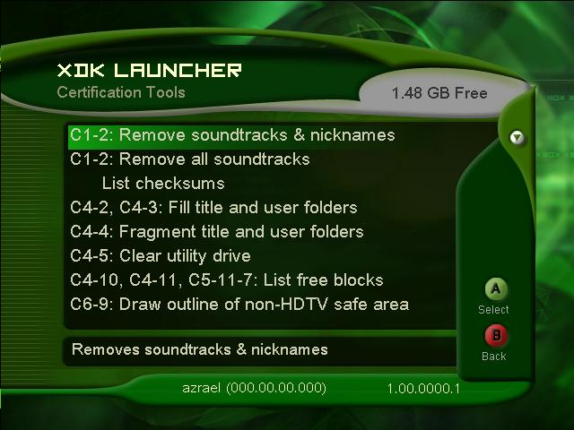

You can access the Xbox certification tools by selecting Certification Tools in the XDK Launcher Settings and Tools menu.
Certification tools help developers set the state of their Xbox such that they are able to test titles under low memory conditions, with localized text, with corrupt save games, and so on. This section provides a listing and brief description of the certification tools available in the XDK Launcher. For an in-depth discussion of certification, see the Certification white paper.

Illustration An image of the Certification Tools screen.
The certification tools fall into two categories:
The following set of certification tools are related to core testing:
Nicknames can be stored on the Xbox shared by Xbox Live titles. This tool helps developers ensure that their titles work correctly without nicknames on the Xbox. The same applies to soundtracks. Run this tool, then check any title interfaces that utilize or display nicknames or soundtracks, or both.
Titles that use soundtracks should be able to run successfully without soundtracks present on the Xbox. This tool removes all soundtracks from the Xbox for testing purposes. Run this tool, then run the title to test.
There are several global settings such as region, sound field (mono, stereo, Dolby), and so on. If a title changes a setting for gameplay purposes, the global settings must be identical to what they were before the title was run. Run the tool, run the title, then run the tool again to verify that the global settings remain unchanged.
When saving a game from within a title, the game is stored in the user area of the hard disk. This tool helps test that a title behaves appropriately when there is insufficient space available on the hard disk.
This tool helps developers check that their titles perform as expected while the XBox hard disk is highly fragmented. Run this tool, then run the title.
Clears the utility drive for the title.
Displays the number of free memory blocks when testing fringe cases. Allocate space, then use this tool to check and make sure that the appropriate number of blocks have been allocated.
A white rectangle is drawn on the screen which defines the non-HDTV safe area. Clear tape can be placed along the edge of this box, then, when the title is run, no game-required text or interface elements containing critical game information (such as a speedometer in a racing game) should appear outside of the rectangle.
Similar to C6-9 above, this tool draws a yellow rectangle that defines the HDTV safe area.
Soundtrack titles must display square boxes to represent characters that cannot be displayed when localized fonts are loaded. This tool creates localized soundtracks (titles) for testing purposes.
Nicknames must display square boxes to represent characters that cannot be displayed when localized fonts are loaded. This tool creates localized nicknames for testing purposes.
A named memory unit (MU) must display square boxes to represent characters that cannot be displayed when localized fonts are loaded. This tool creates localized MU names for testing purposes. Insert the MU into the controller, run the tool, then check the MU screen within the title to verify that the name displays correctly.
Saved games must display square boxes to represent characters that cannot be displayed when localized fonts are loaded. This tool creates localized saved games for testing purposes.
Creates up to 4096 saved games for the specified title.
Time zone settings should not be hard-coded in a game title. This tool changes the time zone setting of the Xbox to verify that the title handles the change appropriately.
Language settings should not be hard-coded in a game title. This tool changes the language setting of the Xbox to verify that the title handles the change appropriately.
Titles should write data to the scratch partition only, thus ensuring that temporary data files will not be left on the Xbox hard disk. Run this tool before and after a game session, then compare the results to make sure no additional data is left behind.
This tool is obsolete. Please see the PC-side Xbox Save Game Corruption Tool (XbSGCorrupt) for more information.
Directories whose name ends with a '$' are reserved by the Xbox. This tool makes sure that no directories created by the title violate this rule.
The following set of certification tools are related to Xbox Live testing:
Storage of personal/account information on the Xbox is not allowed—it can be sent only to the service. This tool searches for account information stored on the Xbox.
Quickly creates friends accounts in various states, such as pending friends requests. This tool is useful for determining how the title will behave with large Friends lists in various states.
This tool is an Xbox application that tests how titles will handle game invitation requests from a player in another game.
Erases any temporary files created by the certification tools from the Xbox hard disk.